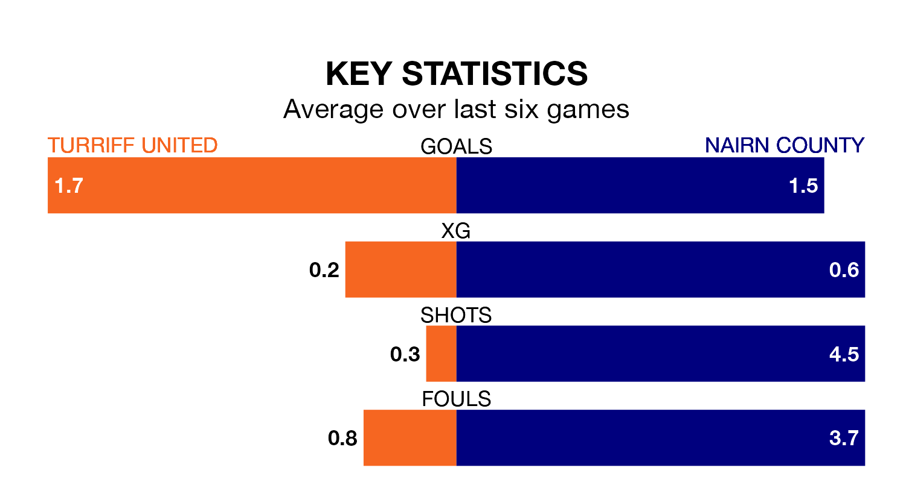

Turriff United are on a poor run ahead of hosting Nairn County at the Haughs on Saturday, with just four points collected from their last six games.
Turriff have picked up one win and one draw in their last six Highland Football League games, and face a Nairn side whose last six games have brought one win and two draws.
With 61 goals in 26 games so far this season, Turriff are scoring more than average in the league with 2.3 goals per game. And they are conceding fewer than average, letting in 48 goals at a rate of 1.8 per game.
Nairn, meanwhile, are average scorers, with 1.9 goals per game. They have also conceded 1.9 goals per game.
In the last 10 years, Turriff and Nairn have played each other on 11 occasions. Turriff won five of them and Nairn six.
On average, Turriff scored 1.2 goals and Nairn 1.6 in those matches.
Their last meeting was on November 4, when Nairn won 2-1 at home.
County are seventh in the table after 27 games, of which they have won 14 and drawn three, earning 45 points.
United are two places behind the visitors in ninth, with 13 wins and one draw putting them on 40 points.
Turriff's last match was on Wednesday, a 3-1 loss against Deveronvale.
Nairn drew 1-1 with Keith last time out, also on Wednesday.
Updated: 09:34 (UTC), 08/03/24